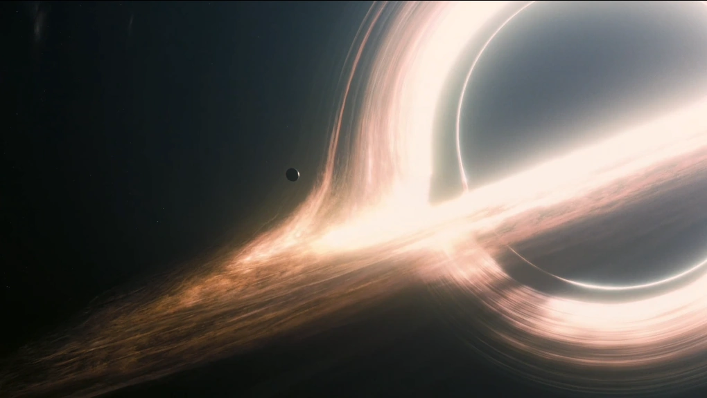

-  Gargantua
- Planeta Edmunds
- Planeta Mann
-
 Planeta Miller
Planeta Miller
- Tars
- Estação Cooper
Conheça os planetas mais fascinantes do universo.
Assista Agora Interestelar é uma jornada emocionante sobre amor, ciência e a busca pela sobrevivência além das estrelas.
Planeta Miller
O físico Kip Thorne ajudou a criar simulações realistas do buraco negro, que depois foram usadas em artigos científicos.
A diferença de tempo no planeta Miller é baseada na Teoria da Relatividade de Einstein: cada hora lá equivale a sete anos na Terra.
Os robôs TARS e CASE foram inspirados em blocos de LEGO e manipulados por atores reais no set.
Muitas cenas externas foram filmadas em locações reais, como o campo de milho plantado especialmente para o filme.
Hans Zimmer compôs a trilha sem saber que era para um filme de ficção científica, focando na emoção da história.